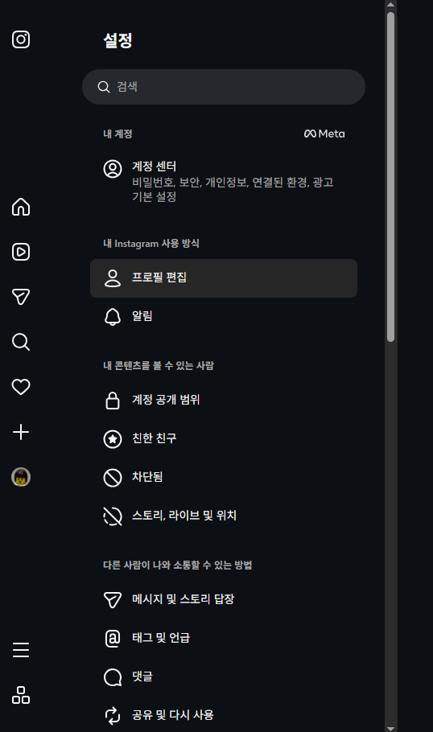
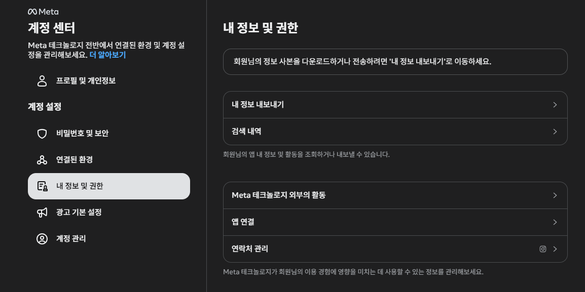
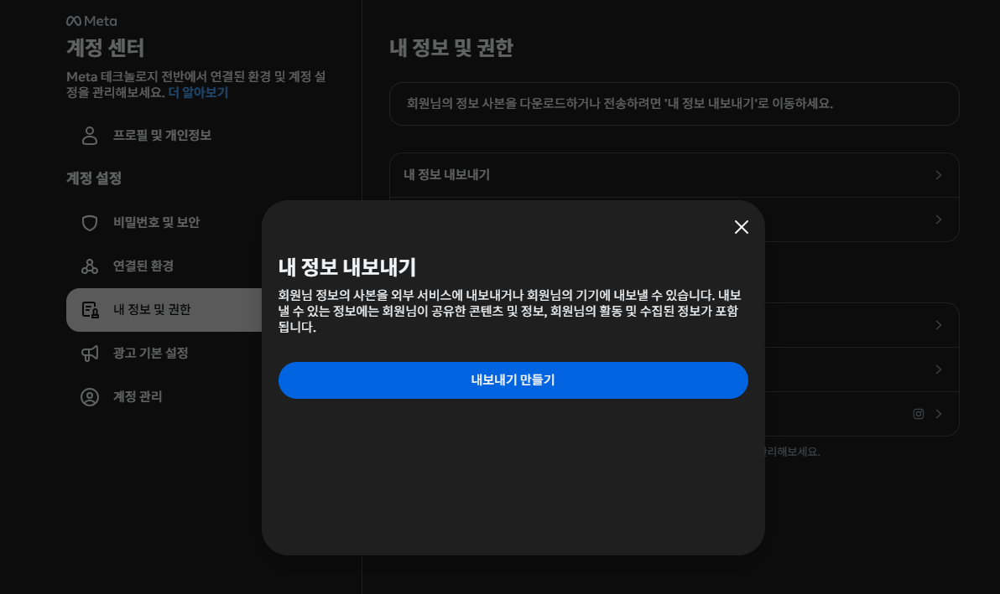
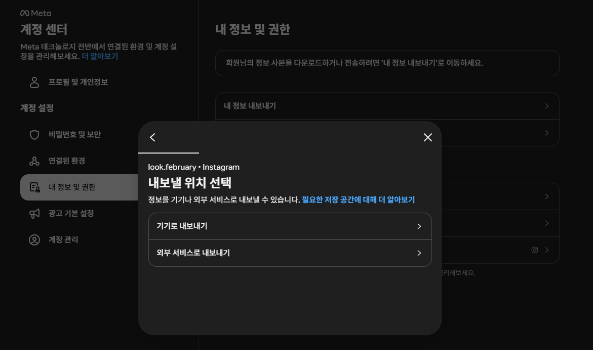
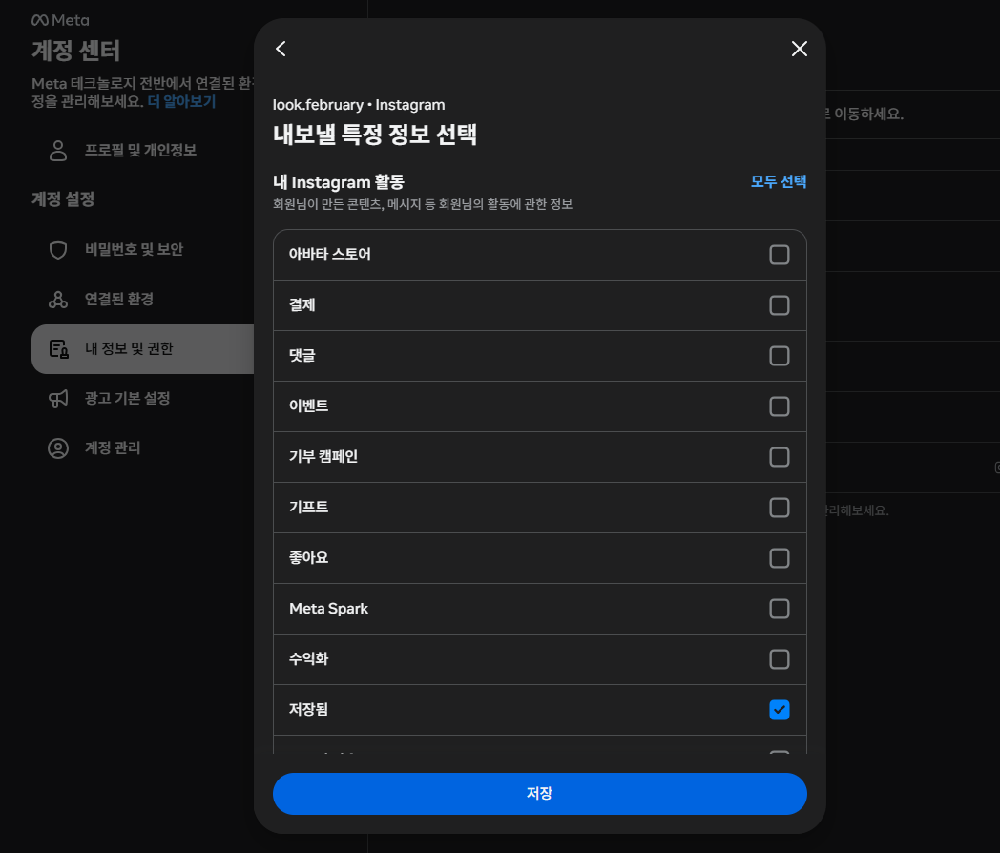
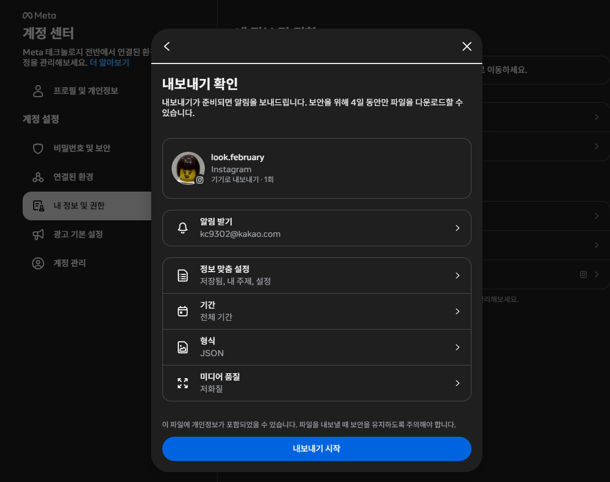

저장됨 취향 지도
인스타그램에 저장해 둔 게시물을 다시 찾고, 내가 무엇을 모았는지 봅니다.
이 파일은 폰 밖으로 나가지 않아요.
자세히 보기
- 페이지를 연 뒤 비행기 모드로 바꿔도 그대로 동작합니다. 직접 확인해 보세요.
- 인스타 ZIP에는 메시지, 팔로워 등 다른 기록도 들어 있을 수 있습니다. 이 페이지는 저장됨 폴더 안의 파일만 읽고 나머지는 열지 않습니다. 불러온 뒤 화면에 읽은 파일 이름을 보여 줍니다.
- 쓰는 항목은 게시물 링크, 저장 시각, 계정명, 캡션뿐입니다.
- 로그인과 비밀번호 입력이 없습니다. 주제 수정과 규칙은 이 브라우저에만 남습니다.
- 소스 코드와 문의: github.com/kc9302/Savvy (Issues에 남겨 주세요)
고지 사항
- 처리 범위와 예외: 파일 읽기와 분류는 이 기기의 브라우저 안에서만 하고, 개발 중 확인에서 외부로 보내는 요청은 없었습니다. 다만 이 페이지를 받아 오는 호스팅 서비스는 접속 기록(주소, 시각 등)을 남길 수 있습니다. 예외는 내가 직접 하는 일입니다. CSV나 이미지로 저장한 파일을 공유하면 그 파일은 내가 보낸 것이 됩니다. 수정 내용은 이 브라우저에 남으므로 사이트 데이터를 지우면 사라집니다.
- 비공식 도구: 인스타그램, Meta와 관계없는 개인이 만든 도구입니다. 인스타그램 내보내기 형식이 바뀌면 일부 파일을 못 읽을 수 있습니다.
- 책임과 한계: 주제는 키워드로 추정한 것이라 틀릴 수 있고, 나를 평가하거나 판단하는 결과가 아닙니다. 직접 고쳐 쓰는 용도입니다. 내보내기 파일의 보관과 공유는 사용자 책임이며, 결과는 있는 그대로 제공합니다.
내 저장 목록 불러오기
인스타에서 받은 ZIP을 그대로 선택하면 됩니다. 압축을 풀 필요가 없습니다. 파일 이름은 instagram-계정명-날짜-….zip 처럼 생겼습니다. 파일이 준비되기까지 시간이 걸리니, 요청해 둔 동안 이 주소를 북마크해 두세요.
인스타 앱 안에서 연 것 같습니다. 이 화면에서는 파일 선택이 안 될 수 있으니, 오른쪽 위 메뉴(⋯)에서 "외부 브라우저로 열기"를 눌러 크롬이나 사파리에서 여세요.
⭐ 어떤 파일을 골라야 하나요? (중요)
- 인스타에서 받는 ZIP 파일 하나를 그대로 고르면 됩니다. 압축을 풀거나 폴더를 선택할 필요 없습니다.
- ZIP 안에는 saved_posts.json 파일이 들어 있습니다. 이 파일이 분석 대상입니다.
- 경로 예:
instagram-계정명-날짜.zip→ 안에your_instagram_activity/saved/saved_posts.json - ZIP 안에 여러 JSON 파일이 있어도 괜찮습니다. 앱이
saved_posts.json을 자동으로 찾아 분석합니다. - 파일 이름이
instagram-계정명-날짜-…zip이 아닌 경우도 있습니다. "instagram"이 포함된 ZIP을 고르면 됩니다.
파일 받는 방법 (웹)
- 인스타 웹사이트(instagram.com)에 접속해 계정 프로필로 이동합니다.
- 프로필 오른쪽 위 메뉴(⋯)를 눌러 "설정 및 활동" → "계정 센터"를 선택합니다.
- "내 정보 및 권한" → "내 정보 다운로드" → "정보 다운로드 또는 전송"으로 이동합니다.
- 저장한 계정을 선택하고, 일부 정보에서 "저장됨"만 체크합니다.
- "기간에 전체 기간", "형식: JSON(권장)", "미디어 품질: 낮음"으로 설정합니다.
- 다운로드가 준비되면 인스타 알림과 이메일로 안내가 옵니다. 이때 이 페이지로 돌아와 ZIP을 선택하세요. 브라우저 메뉴의 "홈 화면에 추가"를 해 두면 찾기 쉽습니다.






메뉴 이름은 앱 버전에 따라 조금 다를 수 있습니다. 반드시 저장한 계정과 같은 계정으로 요청해야 합니다.
파일을 못 고르거나 안 읽힐 때
- 다운로드 앱이나 파일 앱에서 instagram-로 시작하는 ZIP을 찾아 선택하세요. 압축을 푼 폴더가 아니라 ZIP 파일 자체를 골라야 합니다.
- "저장됨 데이터가 없습니다"라고 나오면 요청할 때 저장됨을 골랐는지, 기간이 전체 기간인지, 저장한 계정과 같은 계정인지 확인하세요.
- PC에서 받은 ZIP을 구글 드라이브로 옮겼다면, 드라이브 앱에서 미리보기만 열지 말고 파일 옆 ⋮ → 다운로드(아이폰은 "다른 앱에서 열기" → "파일"에 저장)로 폰에 저장해야 고를 수 있습니다. 폰의 인스타 앱에서 바로 요청하면 이 단계가 필요 없습니다.
- 카드의 "인스타에서 열기"를 눌러도 인스타 첫 화면만 나온다면, 그 게시물이 삭제됐거나 비공개로 바뀐 것입니다. 이 페이지의 오류가 아닙니다.
- ZIP을 못 읽으면 ZIP 안의 saved_posts.json을 풀어서 직접 골라도 됩니다.
- 인스타 앱 안에서 연 화면이면 파일 선택이 막힐 수 있습니다. 링크를 복사해 크롬이나 사파리에서 여세요.
한눈에
주제별
주제를 누르면 찾기 탭에서 그 주제만 보여줍니다.
저장 빈도
내 유형 카드
카드에는 주제 이름과 비율만 들어갑니다. 타인의 계정명과 캡션은 들어가지 않
AI로 더 파보기
주제 통계와 대표 캡션만 담은 텍스트를 복사합니다. 챗GPT·제미나이·클로드에 붙여넣으면 이어서 분석해줍니다. 링크와 계정명은 빼지만 타인이 쓴 캡션이 들어가니 붙여넣기와 공유는 직접 정하세요.
노션으로 옮기기
노션에서 새 페이지 → 가져오기 → CSV로 데이터베이스가 만들어집니다. 폰 앱에서는 CSV 가져오기가 안 될 수 있어서 PC 웹에서 하는 편이 안전합니다. CSV에는 타인이 쓴 캡션과 계정명이 들어 있으니 남에게 보내지 마세요.